Karma Builder
A tool for SideFX Houdini that builds and updates a complete Karma render setup in Solaris (LOPs): camera, lighting, sky, fog, clouds, materials, render variables and render settings.
Overview
Setting up a Karma render means wiring the same nodes again and again: a camera, a sky or dome light, a material library, render vars, Karma Render Settings and a USD Render ROP. Karma Builder does this from one window. You choose a scene mode, adjust sliders and press Build Environment Only; the tool creates the nodes in /stage, connects them in a fixed order and sets their parameters.
The tool is meant to be run many times. It finds the nodes it created earlier and updates them instead of recreating them, so a render setup can be refined from the same window without losing hand edits, and your own nodes are never touched (see Rebuilding safely).
Besides the render setup, it helps with materials: browse a MaterialX catalog as thumbnails, a list or categories, assign a material to prims by drag and drop (on a list or on the Solaris viewport) or with a button, open a material as a node network, and download free MaterialX materials from ambientCG and Poly Haven without leaving Houdini.
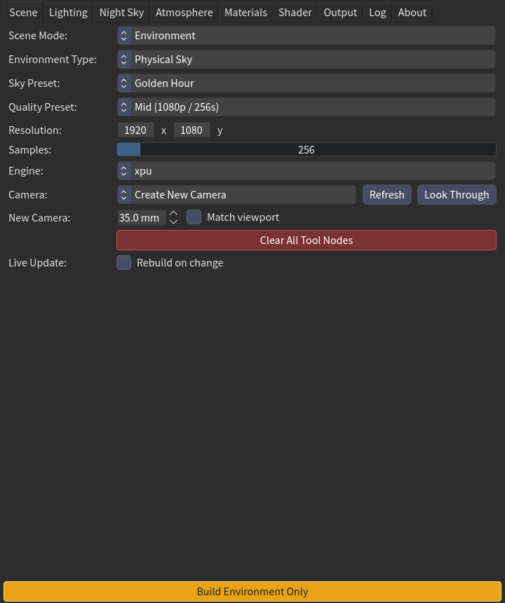
Requirements
- SideFX Houdini 21 or 22, with Solaris (LOPs) and Karma.
- Houdini 22 parameter names are the reference. Older names are tried as fallbacks, and the Log lists any parameter that your version does not have.
- Nothing else to install: the interface, the 2D clouds and the material downloads only use what ships with Houdini (Qt,
numpy,requests).
Installation
No Python to paste: you unpack a folder, double-click a file, restart Houdini. A step by step version, with troubleshooting and how to uninstall, is in README.md at the root of the repository.
Option A: Install.bat (Windows)
- Get the repository (clone it or unpack the zip) and keep the folder where it is.
- Double-click Install.bat. If Windows shows “Windows protected your PC”, choose More info, then Run anyway.
- Restart Houdini. Use the menu BSM → Karma Builder. The shelf Karma Builder is available from the + next to the shelf tabs.
Install.bat writes one small file, packages/bsm_karma.json, in the preferences folder of each Houdini 21 or 22 it finds. The file points Houdini at the folder, nothing is copied, so updating is just updating the folder. If you move the folder, run Install.bat again. Uninstall.bat removes the file.
Option B: package file (Linux, macOS)
Create packages/bsm_karma.json in the Houdini preferences folder with the folder of the repository as path, and a PYTHONPATH entry with method prepend and the same folder as value. The exact content is in the README.
| Windows | C:\Users\%USERNAME%\Documents\houdini<version>\packages\ |
|---|---|
| Linux | ~/houdini<version>/packages/ |
| macOS | ~/Library/Preferences/houdini/<version>/packages/ |
Replace <version> with your Houdini version, for example 21.0 or 22.0.
Option C: the HDA
- Build it with
hython build_hda.py(see the README), then copybsm_karma_builder.hdainto theotlsfolder of your Houdini preferences and restart Houdini, or use Assets → Install Asset Library…. - In
/stage, press Tab and typekarma builder(submenu BSM). - Press Open Karma Builder on the node. The Create Shelf Button button makes a shelf that opens the tool without the node.
The tool and its presets are stored inside the asset. The node passes its input through unchanged and is not part of the network the tool builds; it only opens the window. The asset does not create a shelf or a menu by itself.
Quick start
- Open the window. On the Scene tab, keep Scene Mode: Environment and Environment Type: Physical Sky.
- Pick a Quality Preset (for example Mid (1080p / 256s)) and an Engine (
xpuorcpu). - Pick a Sky Preset such as Golden Hour.
- Press Build Environment Only. The nodes appear in
/stageand the Karma Render Settings node is selected. - Press Karma Viewport on the Export tab to preview, or Render to Disk to render.
- Optional: on the Materials tab, choose a Geometry source and assign materials to its prims.
Change a slider and press Build again at any time: the existing nodes are updated. Turn on Live Update to see value changes without pressing the button.
What gets built
Every build produces the same backbone. Dashed boxes only exist when the matching option is used.
| Node | Type | Role |
|---|---|---|
render_cam | Camera | The render camera, created when Create New Camera is selected. |
geo_merge | Merge | Merges your geometry LOP (the Geometry Source) with the environment, so materials can be bound to its prims. |
mtlx_materials | Material Library | Holds a default MaterialX material, pbr_standard, under /World/Materials. |
material_linker | Material Linker | Created the first time you assign a material from the Materials tab. Holds the references and the assignment rules. |
material_edit | Edit Material | Created when you open a material as a node network (right click in the Materials tab). Sits right after material_linker; edits made inside it are part of the render. |
standard_aovs | Karma Standard Render Vars | The render passes chosen on the Passes tab. Removed when AOVs are disabled. |
karma_settings | Karma Render Settings | Engine, samples, resolution, denoiser, pixel filter, ray limits, output path. Camera is set to the USD prim path of the render camera. |
render_to_disk | USD Render ROP | Renders the chain, with the frame range and image path of the Export tab. |
Scene modes
The Scene Mode decides which lighting nodes sit between the camera and the material library.
| Mode | Nodes | Notes |
|---|---|---|
| Environment | physical_sky (and sky_atmosphere_linker in Volumetric mode) or env_hdri; optional atmosphere_fog; optional cloud_geo, cloud_xform, quickcloudmaterial, assign_cloud_shader (3D clouds) or cloud_layer_2d (2D clouds); then env_merge |
Choose Physical Sky or HDRI Image. Fog and clouds are only available in this mode. |
| Studio | studio_hdri (dome light) and studio_key (area light) |
Uses an HDRI plus one key light. |
| 3 Points | fill_hdri, key_light, fill_light, rim_light |
The dome runs at 20% of Dome Intensity. Relative to Main Area Intensity, the key is 100%, the fill 40% and the rim 150%. |
| Interior | window_portal (area light), plus env_hdri when Window View is HDRI Image |
No sky. An interior is lit by its window, so an area light stands in for it, with the exposure and the color set in Lamp Colors. With Window View on None the window light is the only light. With HDRI Image a dome light shows the picture wherever the camera sees outside, for example through the openings of your walls, and also lights the room through them; with no walls, it shows everywhere. |
When you change mode, the nodes of the previous mode that are no longer needed are removed.
Rebuilding safely
The tool marks every node it creates with the user data bsm_karma_managed. On the next build it:
- updates the nodes that already exist instead of creating new ones;
- keeps hand placement: the generated camera and the area lights are positioned only when they are created. Move one by hand and a rebuild leaves it where it is. (Match viewport on the camera is the exception: it copies the viewport at each build.)
- keeps the default material:
pbr_surfacereceives its default values once, when it is created; - removes only its own nodes that the current mode no longer uses, and does it last: the new network is built and wired first, so what is displayed never depends on a node that is about to disappear;
- pauses cooking while it works (Houdini's update mode goes to Manual, then back to what it was, even after an error), so a running Karma viewport restarts once at the end instead of after every node. A session already in Manual mode is left as it is. Clear All Tool Nodes does the same;
- never touches your nodes: the tool recognizes its own nodes only by the mark it put on them. A node of yours is never deleted, rewired, moved or marked, even if it has the same name or the same type as one of the tool's nodes. If one has the name the tool needs, the build stops with an error that names it (
[ERROR] ... was not created by Karma Builder); rename it and build again.
/stage, after a confirmation that lists them. Nodes you made are never in that list. A tool node that is wired to something outside the tool's own nodes is skipped and reported in the Log. The deletion is a single undo step.Each build, and each material assignment, is also one undo step (Karma Builder - Build, Karma Builder - Assign Material).
Interface reference
The window has one tab per topic and a Build Environment Only button that stays visible at the bottom. It opens compact (about 540 × 600 pixels) and can be narrowed to about 400 pixels without a horizontal scroll bar; each tab scrolls vertically when it does not fit. Drop-down lists are only as wide as the field they sit in, and their full text shows when opened. The screenshots below use sample data.
Numeric fields
Every number is a hybrid field: a bar with an amber gauge showing where the value sits in its range, and the value written in the middle.
- Drag across the bar to set the value; it follows the mouse position. The sun altitude and direction snap to common values (0, 15, 30, 45…) while you drag.
- Click without moving to type a number. Enter or a click elsewhere confirms, Esc cancels. A typed value is exact and is limited to the range of the field.
- Arrow keys (left and right) change the value by the smallest step, and Shift makes the step ten times larger.
- The mouse wheel does not change values, so it keeps scrolling the tab.
Scene
| Control | Description |
|---|---|
| Scene Mode | Environment, Studio, 3 Points or Interior (see Scene modes). |
| Environment Type | Physical Sky or HDRI Image. Only used by the Environment mode. In Interior the field is named Window View and offers None or HDRI Image: an interior has no sky. |
| Sky Preset | Same list as Atmosphere Preset on the Lighting tab; the two stay in sync. Choosing a preset sets the sky sliders. |
| Quality Preset | Sets resolution and samples (see Presets). You can still edit both afterwards. |
| Resolution | Width and height, 1 to 8192. |
| Samples | Path-traced samples, 1 to 4096. |
| Engine | xpu or cpu. Also selects the Karma delegate of the USD Render ROP. |
| Camera | Choose Create New Camera, a camera LOP of /stage, or a camera prim found in the Geometry Source (listed as USD: …). The list refreshes when opened; Refresh forces it. With an existing camera, the generated render_cam is removed. |
| Look Through | Locks a Scene Viewer on /stage to the render camera. Builds first if the camera does not exist yet. If no viewer is on /stage, it opens the Karma viewport instead. |
| New Camera | Focal length (5 to 400 mm) of the generated camera. Match viewport copies the position and rotation of the active viewport at each build; left off, the camera keeps the position it was given the first time. For ultra-wide formats (width/height above 2) the aperture is set to 41.42. |
| Clear All Tool Nodes | See Rebuilding safely. |
| Live Update | See below. |
Live Update (Rebuild on change)
Off by default. Off: the network only changes when you press Build Environment Only, which suits slower machines. On: a change of a value (a slider, a list, a checkbox, an edited path) rebuilds the network about a third of a second after the last change, so dragging a slider gives one update, not one per step. A live update does not take the selection, does not re-arrange nodes unless it created or removed some, and only reports problems in the Log (once each); everything is still written to the debug log file. Each update is one undo step named Karma Builder - Live Update.
Lighting
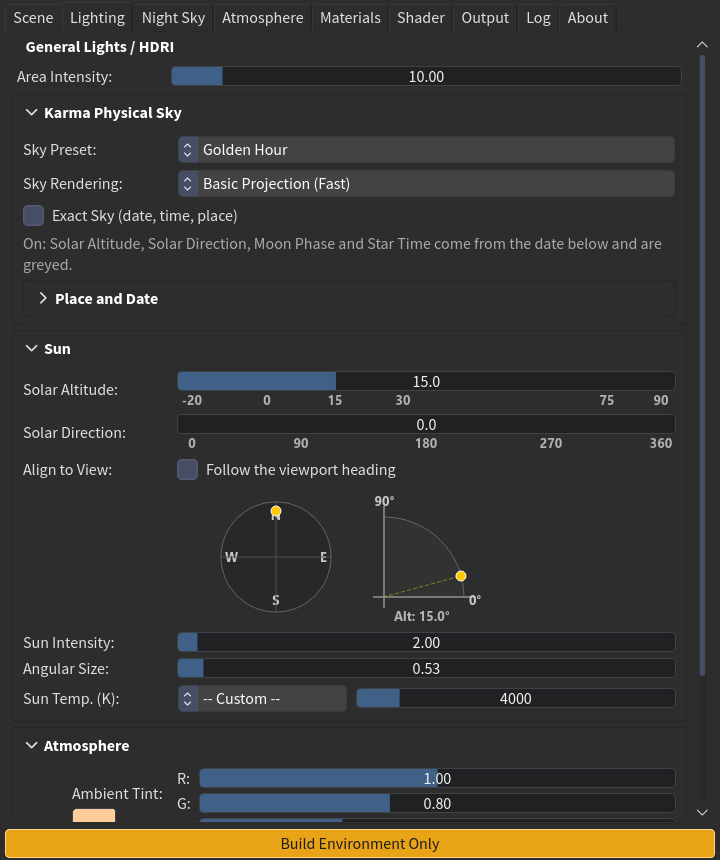
General Lights / HDRI
| Control | Description |
|---|---|
| Dome Intensity | Intensity of the dome light, 0 to 20. |
| Main Area Intensity | Intensity of the area lights (key, fill, rim, window), 0 to 100. |
| HDRI Path | Path of the environment image; $HIP and other variables are accepted. A preview is shown below when the image can be read. |
| HDRI Exposure | −8 to +8 stops, applied as a multiplier on the intensity. |
| HDRI Rotation Y | Rotates the dome around the vertical axis. |
| HDRI Saturation, Temperature, Tint | Combined into the light color of the dome: temperature in kelvin (2500 to 12000), then tint (green to magenta), then saturation. |
The HDRI controls are only shown when the mode uses an HDRI (Studio, 3 Points, or Environment with HDRI Image, Interior with a Window View HDRI). The preview shows the whole picture in a frame that follows the width of the tab (2:1 for a lat-long image, at most 240 px high), whatever the size of the file. It uses Qt for the usual formats, the tool's own readers for Radiance .hdr and OpenEXR (no compression, RLE, ZIP), and falls back to Houdini's iconvert for the rest (PIZ and other compressions, RAT). If none works the preview says why, for example Preview unavailable: OpenEXR compression PIZ ...; iconvert not found; the render is not affected.
Lamp Colors
Shown in Studio, 3 Points and Interior. Each lamp has a Temp. (K) slider (low is warm, high is cool, 6500 is neutral white) and a Tint slider (green to magenta). Studio has one lamp (the key), 3 Points has the key, the fill and the rim, Interior has the window light (the key sliders, named Window). A color change is applied by Live Update like any value.
Karma Physical Sky
Shown when the mode uses a physical sky.
| Control | Description |
|---|---|
| Atmosphere Preset | Sets the sky sliders in one step (see Presets). -- Custom -- leaves them alone. A preset is applied when you pick it; later edits to the sliders are kept. |
| Sky Rendering | Basic Projection (Fast) uses the classic sky. Volumetric Atmosphere (Realistic) uses the volumetric atmosphere and adds a sky_atmosphere_linker (Light Linker) that links the sun to the atmosphere. The atmosphere is lit by the sun alone and only renders in Karma: with the sun below the horizon (a negative Solar Altitude, as in the night preset) it is dark, and the Log says so. |
| Solar Altitude | −20° to 90°. A side view next to the sliders shows the sun's height. |
| Solar Direction | 0° to 360°, with a compass. |
| Align to View (Follow the viewport heading) | Off by default. When on, the Y rotation of the active Scene Viewer is added to the Solar Direction at each build, so the sun turns with the view. The compass does not show this offset. |
| Sun Intensity, Angular Size | Sun intensity (0 to 50) and apparent size (0.01° to 10°; the real sun is about 0.53°). |
| Sun Temp. (K) | Sun color, 1500 to 20000 K, with a list of common sources (candle, tungsten, daylight…). |
| Ambient Tint | R, G, B multipliers (0 to 2), with a colour square under the label. Used as the fog color. Values above 1 are shown clipped in the square. |
| Turbidity, Horizon Blur | Used by the Basic Projection sky. |
| Sky Intensity | Intensity of the sky itself. When fog or clouds are enabled, it is multiplied by 4 because volumes absorb sky light. |
| Rayleigh (blue), Mie (haze) | Scale the scattering of the volumetric atmosphere, 0 to 5 (1 is the node's default). |
Atmosphere
Fog and clouds are only built in Environment mode; in the other modes the two groups are disabled and ignored. A diagram at the bottom shows the fog height and the cloud altitude to scale.
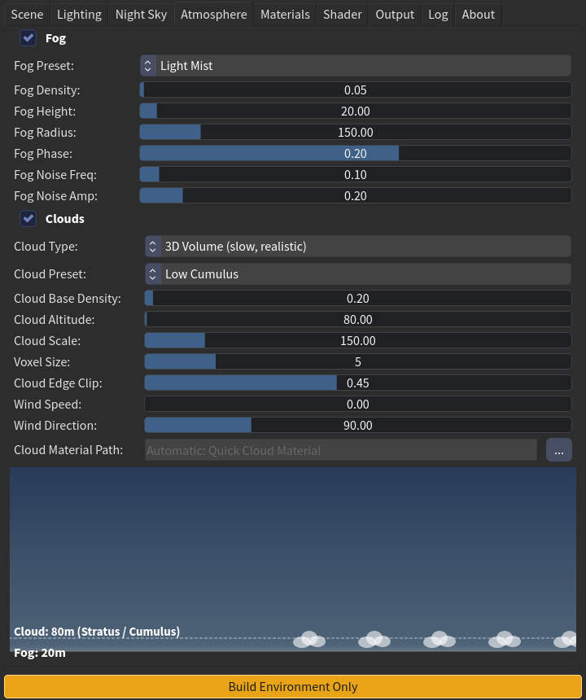
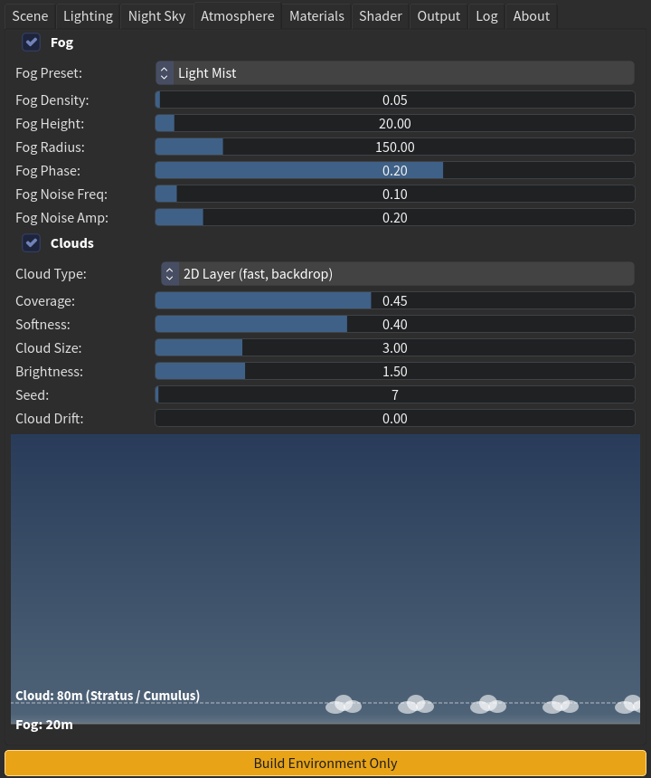
Fog
A Karma Fog Box LOP named atmosphere_fog, centered at the fog height.
| Control | Description |
|---|---|
| Fog Preset | Light Mist, Thick Ground Fog or Creepy Swamp. |
| Fog Density, Height, Radius | Density, height (up to 500) and horizontal extent of the box. |
| Fog Phase | Scattering direction, −1 (back) to 1 (forward). |
| Fog Noise Freq, Amp | Noise frequency and strength inside the fog. |
Clouds
Cloud Type chooses how the clouds are made.
| Type | Description |
|---|---|
| 3D Volume (slow, realistic) | Real cloud volumes, lit by the sun, with parallax (below). |
| 2D Layer (fast, backdrop) | A cloud picture on a second dome light (cloud_layer_2d), added to the sky. No geometry and no volume, so it renders like any dome light: for a distant background. The clouds light the scene a little, like sky bounce, and do not cast shadows. |
2D clouds
The picture is generated by the tool: seamless around the horizon, nothing below it, fading near the horizon. It is written as a linear 16-bit bsm_clouds_*.exr in the bsm_karma/clouds folder of your Houdini preferences. The same settings reuse the same file; the last six are kept. Copy the file with the project if the scene is rendered on another machine. A live update uses a half size picture, the next Build writes the full one (2048 × 1024). It needs numpy, which ships with Houdini. Brightness is relative to the sky: 1 is as bright as the sky intensity (or the HDRI intensity), the default 1.5 makes the clouds a little brighter than the sky.
| Control | Description |
|---|---|
| Coverage | Share of the sky covered, 0 (clear) to 1. |
| Softness | Soft edges and haze (high) or crisp cumulus edges (low). |
| Cloud Size | Number of large cloud masses around the horizon. |
| Brightness | Intensity of the cloud dome light. |
| Seed | Another number, another pattern. |
| Drift (deg/min) | Animation: the clouds turn around the sky by this many degrees per minute (the rotation of the dome light follows the time). 0 keeps them still. Press Play in Houdini to see it. |
3D clouds
A SOP Create LOP named cloud_geo, holding a small SOP network (Sky Box → Cloud Billowy Noise → Cloud Adjust Density Profile) at /World/Environment/Clouds, moved by cloud_xform and bound to a cloud material by assign_cloud_shader.
| Control | Description |
|---|---|
| Cloud Preset | High Cirrus, Low Cumulus, Stormy, Stratus, Cumulus, Altocumulus or Cirrostratus. |
| Cloud Base Density | Density of the cloud material. 0.20 is SideFX's default scale. |
| Cloud Altitude, Scale | Height of the cloud layer (10 to 13000) and its size. |
| Cloud Voxel Size (Prec) | Voxel size of the cloud volume: a larger value is faster and coarser. |
| Cloud Edge Clip | Where the noise is cut, which sets the cloud coverage. |
| Wind Speed (m/s), Wind Direction | Animation: the clouds slide along the ground plane with the time, at this speed, towards this direction (0 is -Z, away from the default camera; 90 is +X, to the right). 0 keeps them still. Press Play to see it. |
| Cloud Material Path | Empty: the tool uses SideFX's Quick Cloud Material (quickcloudmaterial). Otherwise give the USD path of your own material, or use … to pick a material node or library. |
With both fog and clouds on, the Volume Limit is raised to at least 8.
Materials
Assign materials from a catalog to the prims of your geometry, by drag and drop or with a button. The tool writes the assignments in a Material Linker node. The top half is the catalog, the bottom half the prims of the Geometry source.
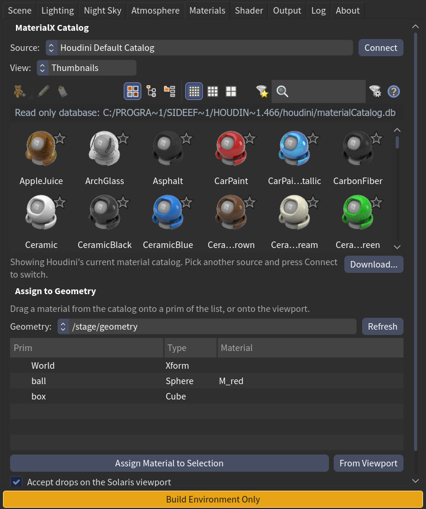
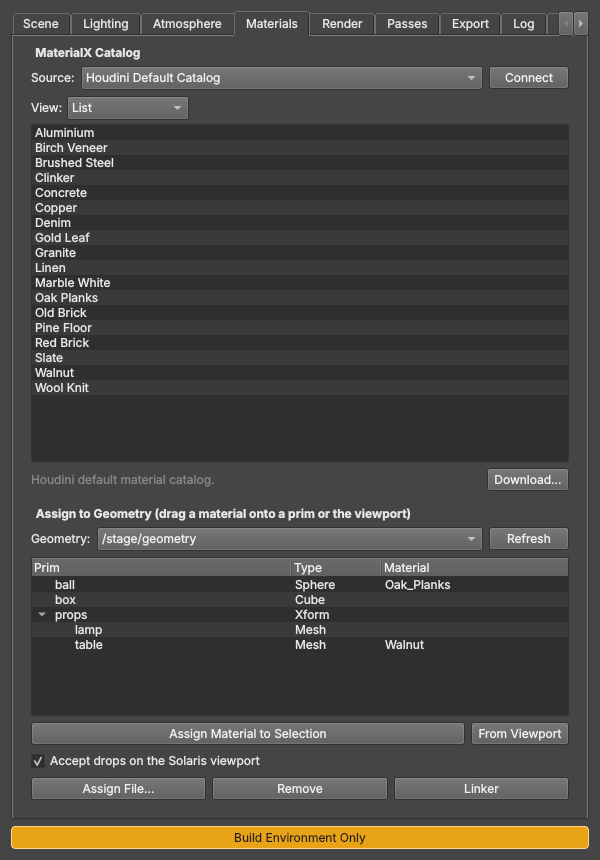
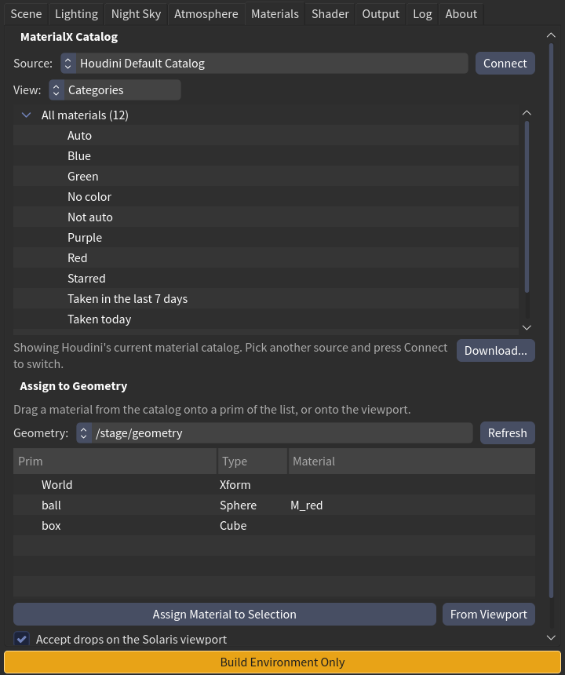
Catalog
| Source | Description |
|---|---|
| AMD MaterialX Library | Online library (matlib.gpuopen.com). Packages are downloaded into the Download to folder the first time a material is used. The tool checks that the server answers before connecting, so an offline machine does not freeze Houdini. |
| Houdini Default Catalog | The catalog shipped with Houdini (materialCatalog.db). The window opens on this source. |
| USD / MaterialX File… | Any .mtlx, .usd, .usda, .usdc or .usdz file. A .mtlx is wrapped in a small temporary USD layer so the gallery can show it. |
Press Connect to switch source. The catalog is shared by the whole Houdini session; when the window closes, the default catalog is restored.
Views of the catalog
The View list above the catalog switches how the same materials are shown.
| View | Description |
|---|---|
| Thumbnails | Houdini's own gallery. |
| List | All materials as one alphabetical list. Hover a name to see the folder it comes from. |
| Categories | The materials grouped by folder, with the number of materials in each group. |
The List and Categories views read the rows the gallery has already loaded (they never ask a catalog for more, which could start a download), and they follow the gallery when it changes or when you connect another source. They can be dragged from like the gallery.
Right click on a material
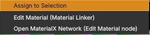
| Action | What it does |
|---|---|
| Assign to Selection | Same as the Assign Material to Selection button. |
| Edit Material (Material Linker) | References the material in material_linker (without assigning it), selects the node and makes it current, so Houdini's parameter pane and Material Linker show it. |
| Open MaterialX Network (Edit Material node) | Same reference, then creates material_edit (an Edit Material LOP) right after the linker, points it at the material, presses its Load button and dives into it, so you see and edit the material as nodes. The node holds one material at a time: opening another one asks first, because the edits made in the first network are replaced. Anything the tool cannot do on this Houdini is listed in the Log and the node is left selected for you to finish. |
The right click replaces the context menu of Houdini's gallery inside the tab. With several materials selected, the first one is opened. Each action is one undo step.
Assign to geometry
- Choose a Geometry source: a LOP node of
/stagethat is not one of the tool's nodes. It is merged with the environment (geo_merge) on the next build. Selecting it lists its prims in the tree. - Drag a material from the catalog onto a prim of the tree. If the prim is part of the selection, all selected prims receive it.
- Or drag it onto an object of the Solaris viewport (option Accept drops on the Solaris viewport). The prim under the cursor gets the material, or the whole viewport selection if the prim is part of it. The drop is only listened to while a drag from the catalog is running, and is refused on the tool's own window.
- Or select a material in the catalog and press Assign Material to Selection. The targets are the prims selected in the list; with none, the selection of the Solaris viewport. From Viewport selects in the list the prims selected in the viewport.
- Or select prims and use Assign File… (a MaterialX or USD file); if the file holds several materials, you pick one.
- Remove clears the assignment of the selected prims. Linker selects the node so you can edit the rules in Houdini's own panel.
Prim paths that come from the viewport are only used when they are plain USD paths. A prim has one material: assigning a new one replaces the previous rule. The first assignment builds the environment if needed and creates material_linker. The tree shows the material bound to each prim and is limited to the first 5000 prims; the tool's own prims (/Render, /lights, /cameras, /World/Environment, /materials) are hidden.
Download materials
The Download... button opens a window that downloads MaterialX materials from ambientCG or Poly Haven. Nothing has to be installed: the tool makes the requests itself, with the requests module that ships with Houdini. The download runs in the background, Houdini stays usable, and Stop ends it.
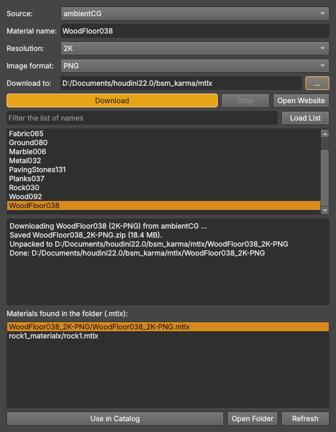
| Source | What you give |
|---|---|
| ambientCG | The material name (for example WoodFloor038), the resolution (1K to 8K) and the image format (PNG or JPG). The zip is saved, then unpacked into a folder of its name. |
| Poly Haven | The asset id (for example polystyrene) and the resolution (1k to 8k). The .mtlx and its textures go to <id>_materialx. EXR textures are taken as PNG when the site has them, and the .mtlx is changed to match. |
Load List asks the site for the names of its materials; the list can be filtered, and a click puts the name in the field. Open Website opens the source in your browser. When the run ends, the .mtlx files of the folder are listed with a thumbnail (the color map next to the file), the new one selected. Drag a material from that list onto a prim of the list in the Materials tab, or onto an object of the Solaris viewport: it is bound to that prim (to the whole selection when the prim you drop on is selected), exactly like a drag from the catalog. Assign to Selection, or a double click, binds it to the prims selected in the Materials tab list or in the viewport. Tick Assign to the selected prims when a download ends to bind a material as soon as it is unpacked: select the prims, type a name, press Download. Use in Catalog shows that file's materials in the catalog above, like the USD / MaterialX File... source. Only files of the download folder are taken from a drop. The default folder is bsm_karma/mtlx in your Houdini preferences; the folder and the source are remembered.
What a server sends is not trusted: only https addresses on ambientCG and Poly Haven are used, one file may not exceed 800 MB, a path that leaves the folder, a backtick in a file name or a very large archive is refused, and names are limited to letters, digits, _, . and - (no leading dash). The materials come from the internet: check their licence, and treat the files like any file you did not make.
Shader
A simple editor for the material of a prim, and the tool's own basic materials, so that you do not have to go through MaterialX nodes for everyday changes.
| Part | What it does |
|---|---|
| Material | The materials of the Material Linker (assigned from the Materials tab or from this one). Pick one, or press From Prim Selection for the material of the first selected prim. Open Network shows the Material Linker for the full MaterialX network. |
| Basic Materials | Sixteen materials the tool writes itself as small MaterialX files: Plastic, Rubber, Steel, Gold, Chrome, Copper, Glass, Frosted, Skin, Wax, Marble, Ceramic, Car Paint, Fabric, Leather, Emissive. Click one to assign it to the prims selected in the Materials tab list or in the viewport, or drag it onto a prim of the list or an object of the Solaris viewport. |
| PBR | The general purpose material: a MaterialX standard surface with a slot for each map of a texture set, like the Principled shader but for Karma. Click the PBR button to assign it (it has no maps at first, it is a plain grey that you edit like any basic material). In the PBR Texture Set group, Load Texture Set... takes a folder and finds the maps by the words in their names (color, albedo, diffuse, roughness, metalness, normal, ao, displacement, height, emission, opacity; ambientCG and Poly Haven names work). Eight slots (Base Color, Roughness, Metalness, Normal, Ambient Occlusion, Displacement, Emission, Opacity), each with a ... file picker, can also be filled one by one or cleared. Options: Normal Format (OpenGL or DirectX, the green channel is flipped for DirectX), glossiness maps (inverted), AO Strength, Offset U and V and Rotation. Tint, brightness, roughness scale, normal strength, displacement and tiling are the controls of the Textures group. Only color maps are read as sRGB, the others as data. Reset keeps the maps and brings everything else back to the defaults; Save as My Material writes the material with its maps to My Materials. A map must be a full path to a png, jpg, tif, exr, tga, tx or webp file. |
| Random Material | A new color and finish drawn from ranges you set: Kind (Any, Plastic, Matte, Metal, Paint), a hue range (from 300 to 60 goes through red, 0 to 360 is every color), saturation and brightness ranges, and a Seed (the same seed and ranges give the same colors again; each use moves it on). Click the ball or Assign to Selection: each selected prim gets its own random material. Drag the ball onto a prim or the viewport for one. Randomize Material Being Edited gives the material of the Material group a new random color (a texture is tinted instead). |
| My Materials | The materials you saved with Save as My Material..., in bsm_karma/my_materials of your Houdini preferences. They are used like the basic ones. |
| Base | Color (click the swatch), roughness, metalness. |
| Subsurface | Amount, color, radius per channel and scale, for skin, wax, marble and leaves. The check box turns the effect off and on. |
| Specular / Coat | Specular, IOR, coat and its roughness. |
| Transmission | Amount, tint, absorption depth and Thin Walled, for glass and liquids. |
| Sheen, Emission, Opacity | Fabric sheen, emissive color and strength, opacity. |
| Textures of this material | Only for a material with textures (the ones you download): tint, brightness, roughness multiplier, normal strength, displacement and tiling. They scale the textures without replacing them. An input that a texture drives is greyed in the groups above; change it here, or give it a value to replace the texture. |
How it works: the editor reads the .mtlx file of the material, changes the values in the text and writes a copy next to it (name.bsm_xxxxxxxx.mtlx), then points the Material Linker at the copy. The original is never modified and its textures keep working, since the copy lies next to them. Changes apply after a short pause, so a slider can be dragged. Reset to Original points the Material Linker at the original again; the last eight copies of each file are kept. Save as My Material... keeps what you see under a name (next to the textures when the material has some).
It edits a standard surface. A material of another structure is shown as one that cannot be edited here, and Open Network is the way to change it. The editor does not change nodes of your own.
Render
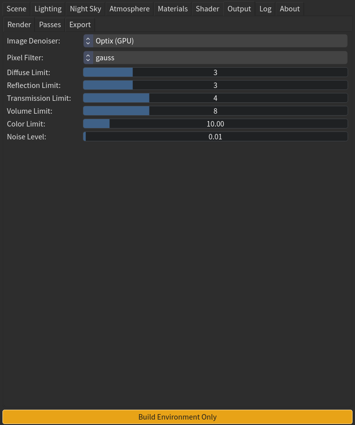
| Control | Default | Description |
|---|---|---|
| Image Denoiser | Optix (GPU) | None, Optix (GPU) or OIDN (CPU). |
| Pixel Filter (AA) | gauss | gauss, box, blackman or blackmanharris. |
| Diffuse / Reflection / Transmission Limit | 3 / 3 / 4 | Maximum ray bounces of each kind, 0 to 16. |
| Volume Limit | 8 | Maximum volume bounces, 0 to 32. Raised to 8 when fog and clouds are both on. |
| Color Limit (Clamp) | 10 | Clamps very bright samples to reduce fireflies. |
| Noise Level (Variance) | 0.01 | Variance threshold of adaptive sampling; lower is cleaner and slower. |
Passes
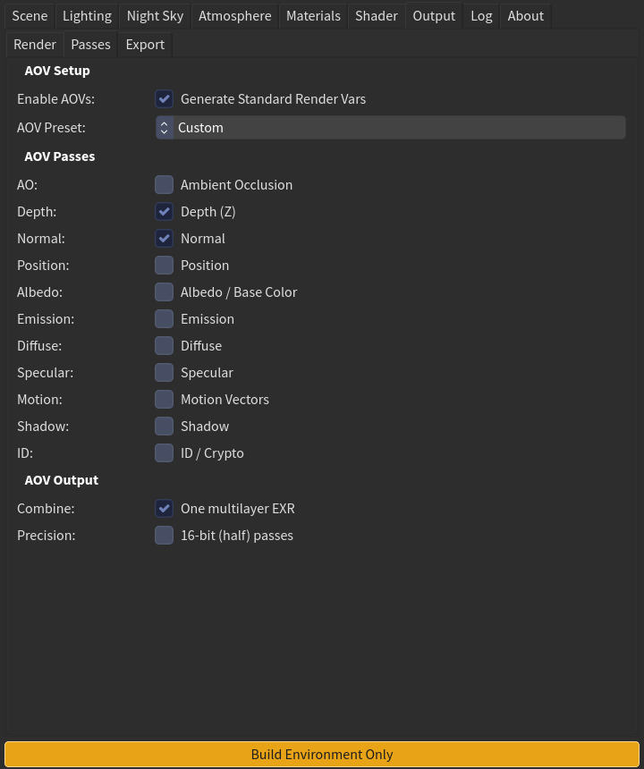
Controls the standard_aovs node (Karma Standard Render Vars). Untick Enable AOVs and the node is removed.
| Pass | Karma variable |
|---|---|
| Ambient Occlusion | ambientocclusion |
| Depth (Z) | hitPz |
| Normal | hitN |
| Position | hitP |
| Albedo / Base Color | albedo |
| Emission | combinedemission |
| Diffuse | combineddiffuse |
| Specular | combinedglossyreflection |
| Motion Vectors | motionvectors |
| Shadow | shadow |
| ID / Crypto | primid / element |
AOV Preset ticks a set of passes for you:
| Preset | Passes |
|---|---|
| Utility | AO, Depth, Normal, Position, Motion Vectors, ID |
| Lighting | AO, Albedo, Emission, Diffuse, Specular, Shadow |
| Full | All passes |
| Custom | Leaves your choice as it is |
AOV Output. One multilayer EXR writes all passes in one file; unticked, they are split into one file per pass. 16-bit (half) passes sets the precision of the passes other than the beauty. The beauty follows the Precision of the Export tab.
Export
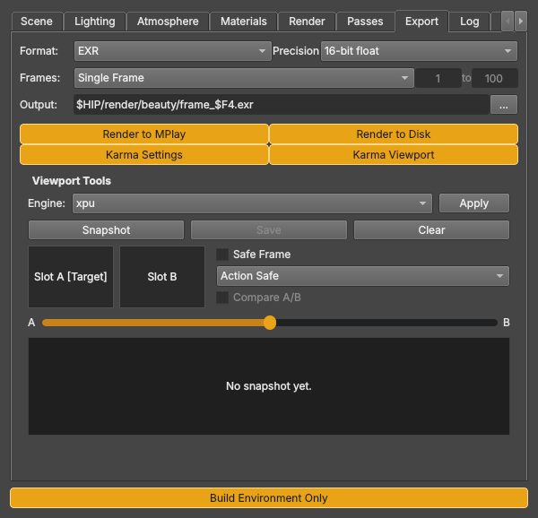
| Control | Description |
|---|---|
| Format, Precision | EXR or PNG, and for EXR the precision (16-bit or 32-bit float), on one row. The precision is hidden for PNG. |
| Frames | Single Frame or Frame Range; the start and end frames sit on the same row and are enabled for a range. |
| Output | Default $HIP/render/beauty/frame_$F4.exr. The extension is corrected to match the format. A name with a frame token but no extension, such as beauty.$F4, keeps the token and gets the extension added. |
Buttons
The four actions are in a 2 × 2 grid.
- Render to MPlay: builds, then renders the frame to MPlay without writing a file.
- Render to Disk: builds, creates the output folder if needed, then starts the USD Render ROP. If the build fails, nothing is rendered.
- Karma Settings: builds and opens a floating parameter panel on the render node.
- Karma Viewport: builds and opens a floating Scene Viewer on
/stagewith the Karma delegate and the render camera, with most interface bars hidden. Volumetric atmosphere and the 3D clouds only show in a Karma viewport, not in a standard Houdini viewport.
Viewport tools
- Engine and Apply switch the viewport (and the build) between XPU and CPU.
- Snapshot captures the viewport into slot A, then slot B alternately. The slots are shown as thumbnails, with Safe Frame (action-safe 10% and text-safe 5% margins) and Compare A/B (both images with a slider) beside them. Save writes a PNG or JPEG; Clear empties both slots. Below, the preview shows the whole frame at the ratio of the image (nothing is cropped), with its slot and size under it.
Log and About
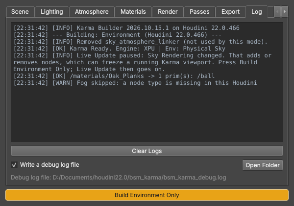
The Log tab records everything the tool does, with a time stamp and a level:
| Level | Meaning |
|---|---|
[OK] | An action finished. |
[INFO] | Something was removed, skipped or decided for you. |
[WARN] | Something could not be done. The build usually continues. Typical cause: a parameter or node type that does not exist in your Houdini version. |
[ERROR] | The build or an action stopped, for example because a node of yours has the same name as a tool node. The traceback is in the debug log file. |
Each build starts with a line giving the Houdini version. About shows the logo, the version of the tool (a number like 1.0.0), the credits and the license. Which build is running is told by an id of 8 characters computed from the source of every module, and where the code was loaded from (a folder, a copy in scripts/python, or the HDA): it is in the title of the window, followed by one word that says where the code was loaded from (folder, installed or HDA), in the first line of the Log and in the debug log. On the HDA node, the Build line under its parameters shows the build that was compiled into the asset. It changes with every edit of the code, and it is the same for the same code wherever it runs from. python tools/build_id.py prints the id of the repository (Python only, no Houdini): if it matches the window, Houdini runs that code.
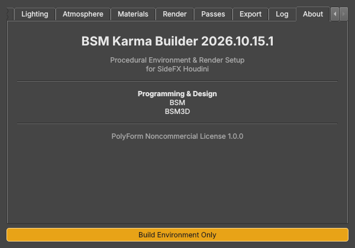
Debug log file
Below the Log, Write a debug log file (on by default) copies everything to a text file, bsm_karma_debug.log. It is more complete than the Log tab and is the file to send when something fails. It records:
- a header for each session: tool version, Houdini version, Python, Qt binding, operating system, script path and the open .hip file;
- every message of the Log tab;
- the full settings of each build;
- each parameter that was not found or was locked on a node (the usual sign of a Houdini version difference);
- the node graph of
/stageafter each build, with the type of each node, its inputs, and whether it belongs to the tool; - the traceback of any error raised by a button. The button's error also appears in the Log tab as
[ERROR], and the window keeps working.
Where the file is written: in the bsm_karma package folder. The HDA has no file on disk, so it writes to bsm_karma inside your Houdini user preferences folder; if that folder cannot be written, a private folder of the session is used. The Log tab shows the exact path, and Open Folder shows the folder. When the file passes 1 MB it is renamed to bsm_karma_debug.log.1 (one backup is kept) and a new one starts.
To start with the log off, set the environment variable BSM_KARMA_DEBUG=0 before launching Houdini. The file only contains paths, node names and settings, but check it before sharing it if your scene paths are confidential.
Presets
Presets are stored in bsm_karma/presets.json (embedded in the HDA). Editing the file adds or changes entries without touching the code; if the file is missing or broken, the tool falls back to one built-in entry of each kind (the Log reports a broken file).
Quality
| Name | Resolution | Samples |
|---|---|---|
| Draft | 1280 × 720 | 64 |
| Low | 1920 × 1080 | 128 |
| Mid | 1920 × 1080 | 256 |
| High | 3840 × 2160 | 512 |
| Ultra | 3840 × 2160 | 1024 |
Sky
Clear Sky (Midday), Sunrise / Dawn, Golden Hour, Sunset / Dusk, Overcast / Hazy, Storm / Heavy Overcast, Night / Moonlight. Each sets solar altitude, sun intensity and temperature, turbidity, sky intensity, horizon blur, ambient tint, Rayleigh and Mie. Night / Moonlight puts the sun below the horizon, which is dark with the volumetric atmosphere.
Fog and clouds
Fog: Light Mist, Thick Ground Fog, Creepy Swamp. 3D clouds: High Cirrus, Low Cumulus, Stormy, Stratus (low), Cumulus (mid), Altocumulus, Cirrostratus. The 2D layer has no presets: its five sliders are the whole setup.
A preset entry is a JSON object. For example, a quality preset:
"render_qualities": {
"Mid (1080p / 256s)": { "rx": 1920, "ry": 1080, "spl": 256 }
}Building the HDA
The HDA is built from the sources with hython, Houdini's command-line Python. Rebuild it after every change to the bsm_karma package, because the asset holds a copy of the code, not a link to the files.
- Open a terminal with the Houdini environment: Houdini Command Line Tools on Windows, or
source houdini_setupfrom the Houdini install folder on Linux and macOS. On Windows you can also callhython.exeby its full path. - Go to the project folder and run:
or, to choose where the file goes:hython build_hda.pyhython build_hda.py path/to/output.hda - The script prints
built … (tool version X, N KB)when it succeeds. Install the file with Assets → Install Asset Library….
What the script does: it creates a subnet that passes its input through, adds an Open Karma Builder button, stores every module of the bsm_karma package (one section each), the presets, the loader module, the license and a help page as sections of the asset, takes the version from SCRIPT_VERSION in bsm_karma/config.py, and writes the file. If icone_Bsm_Karma.png exists at the root of the repository it becomes the node icon.
The loader serves the embedded modules to Python's import system as the package bsm_karma_hda, so the relative imports of the tool work as on disk and nothing clashes with a bsm_karma package on the Python path. A new version of the asset replaces the code of the old one, and the old window is closed first.
hython. To use it in both Houdini 21 and 22, build it with the older one.Tests and screenshots
The tests run with hython against an installed Houdini, from the project folder:
.\tests\run_tests.ps1 -Hfs "C:\Program Files\Side Effects Software\Houdini 22.0.466"| Test file | Covers |
|---|---|
test_build_modes.py | Every scene mode, the values that reach the nodes, 3D and 2D clouds, the volumetric atmosphere, the update mode. |
test_material_linker.py | Geometry merge, references, rules, real USD bindings, the Edit Material node, rebuilds. |
test_cameras_nodes.py | Cameras, and the rule that nodes of yours are never touched. |
test_hdrireader.py | The HDRI preview readers: Radiance .hdr (flat and run-length), OpenEXR, tone mapping, damaged files. |
test_pbrmaterial.py | The PBR material: the spec kept in the file, the graph of each map, texture sets found by names (ambientCG, Poly Haven), refusal of hostile paths, MaterialX validation of every case. |
test_materialeditor.py | The basic materials and the editing of .mtlx files: the files written, values changed, textures kept, variants, checks; USD opens the files. |
test_clouds2d.py | The 2D cloud picture: coverage, seamless, cache, valid OpenEXR. |
test_mxdownload.py | The ambientCG and Poly Haven requests, with a fake network: hostile links, sizes, paths, unzip. |
test_shelf.py | The shelf file, the copy of the package with its backup, the checks on the preferences folder. |
test_hda.py | The built HDA: sections, loader, version, icon, up to date. |
test_security.py | The safety checks (backticks, plain text, private folder, presets). |
Add -Gui to also run the window lifecycle test inside Houdini with the windows hidden (-Visible shows them). The runner prints one line per file; copy the FAIL lines when something fails. -Screenshots regenerates the pictures of this page from a real Houdini into docs/screenshots, with the same file names, and runs no test. The pictures in the repository were first made outside Houdini with a dark theme close to Houdini's, so a run of -Screenshots gives the exact Houdini look.
Houdini versions
- Supported: Houdini 21 and 22. Earlier versions are not supported; the Log warns when the major version is below 21. The test suite has been run on Houdini 22.0.466; Houdini 21 is still to be checked.
- Parameter names. Karma nodes do not always keep the same parameter names between releases. The tool uses the Houdini 22 names and tries older names when they are missing. A setting that no known name matches is skipped, and the Log says which one.
- Qt. The interface goes through Houdini's
hutil.Qt, so it runs on PySide2 or PySide6. - A node type that is missing (for example a cloud or fog node in a given version) makes that branch skip with a warning; the rest of the build goes on.
- Material catalog. The gallery widget is created with a private Houdini function (
hou.qt._createAssetGallery), because no public one exists. If it fails, or returns something that is not a widget, the Materials tab shows a notice with the reason, the source controls are disabled and Assign File… still works. Set the environment variableBSM_KARMA_GALLERY=0to skip the private call altogether, for a Houdini version where it misbehaves. The debug log then lists whathou.qtoffers, to find a replacement. - Solaris viewport. Reading the viewport selection and finding the prim under the cursor use Scene Viewer functions (
currentSceneGraphSelection,locateSceneGraphPrim). If your version lacks them, the buttons say so in the Log and the list-based assignment still works.
Safety checks
Houdini runs a backtick expression (for example `system("...")`) as soon as a string is expanded, so any text that did not come from your own typing is treated as untrusted: a drag and drop, the metadata of an online catalog, a file name, a path stored in a scene, an answer from a server.
What the tool refuses or limits
- A material path, a label or a source that contains a backtick is refused.
- A file picked in a chooser (HDRI, output path, download folder, material file, snapshot) is refused if its name contains a backtick. A downloaded archive can hold such names. The HDRI preview also refuses a path with a backtick that was pasted in.
- The AMD library can only write inside the download folder you connected in the Materials tab, and a package path that escapes it is refused.
- The download window only talks https to ambientCG and Poly Haven, caps a file at 800 MB, and refuses archives and file lists whose paths leave the folder or contain a backtick.
- A catalog source must be one of Houdini's known sources, or an existing database or USD file.
- Text from outside is shown as plain text: in the Log, in the status labels and in the download log. A catalog label cannot draw an image, a link or a fake line in the Log.
- Temporary files (HDRI previews,
.mtlxwrappers, snapshots) go to a private folder created for the session and deleted when Houdini exits. The debug log falls back to that same private folder, never to a predictable name in the shared temp folder. - A name that goes into a Houdini command line (camera path, viewport name) is only used when it contains plain characters. A prim path from the viewport is only used when it is a plain USD path.
- External programs are called with an argument list, never through a shell. The HDRI preview skips files above 400 MB.
presets.jsoncan be edited by hand: an entry with a missing or non numeric value is left out and reported in the Log.- The tool contains no
eval,pickle,os.systemor shell call, and it sends nothing anywhere. Its only network access is the AMD library you connect and the download window you open (https, certificates checked, with timeouts).
What stays your decision
- The HDA runs the Python it carries. Install an asset only from a source you trust, like any HDA. The loader serves the embedded modules and checks nothing else.
- Drag sources. A drop whose source is not the AMD library is accepted when it points to an existing database or USD file: another application could start such a drag. It can only make Houdini read a catalog file you already have.
- Image, MaterialX and USD files are read by Qt and by USD. A damaged file can still hit a bug in those libraries; open files you trust, and check the licence of what you download.
- The debug log holds paths (scene, files) and settings. Read it before sending it to someone.
Troubleshooting
| Symptom | Cause and fix |
|---|---|
[ERROR] Build stopped: /stage/… exists and is a … | One of your nodes has the name of a tool node but another type. Rename or delete it, then build again. |
[WARN] … no matching parameter for … | Your Houdini version does not have the parameter the tool tries to set. The rest of the setup is fine; set that value by hand on the node, and report the version and the node. |
[WARN] Fog skipped / Clouds skipped / 2D clouds skipped | A node type of that branch is missing in your version, or the cloud picture could not be written. Fog or clouds are left out; the rest is built. The message gives the reason. |
| The sky is black with Volumetric Atmosphere | Is the sun below the horizon (a negative Solar Altitude, as in Night / Moonlight)? The atmosphere has no daylight to scatter then; the Log says so. Raise the altitude or use a daytime preset. The atmosphere only renders in Karma: open the Karma Viewport of the Export tab, not a standard viewport. Does the camera see far enough? The atmosphere is a shell about a hundred kilometres thick: with the default far clipping range of a camera (10,000) it is cut off and the sky stays black or dim. The tool raises the far clipping range of the camera it makes to 2,000,000; for a camera of yours it only warns in the Log (it never changes a node it did not make): set that camera's far clipping range by hand. Then try the other engine (CPU or XPU). |
| Houdini freezes for a long time after a change | A running Karma viewport restarts when nodes are added or removed. The tool pauses cooking during a build and keeps such changes out of Live Update, but a very heavy scene can still take long to restart. Switch Live Update off, change what you need, then press Build Environment Only; try the cpu engine if it persists. |
| Live Update does nothing | Look at the Log: it waits for a first Build Environment Only, and it pauses after a change that adds or removes nodes. Press Build; it goes on after that. |
| No sun, or the sun does not move | See the [WARN] Physical Sky lines. Check that Sky Rendering matches what you want, and that Sun Intensity is above 0. |
| The 2D clouds do not show | They are a second dome light added to the sky: check that Cloud Type is 2D Layer, that Coverage and Brightness are above 0, and that the Log has no 2D clouds skipped line. The Log line 2D clouds: dome light ... gives the intensity used. Raise Brightness for a stronger backdrop. Karma XPU and Karma CPU may not treat a second dome light alike: if it does not show in one, try the other. |
| Material not assigned | The Log gives the reason: the file contains an expression, the AMD folder is not the connected one, no prim was selected, or the Material Linker of your version has a different parameter layout. |
| A drop on the viewport does nothing | Check the Log: No prim under the cursor means the pick found nothing. If there is no line at all, Houdini's viewport did not take the drop: use Assign Material to Selection after selecting the object. The debug log lists the widgets seen under the cursor, which tells what to adjust for your Houdini version. |
| The List and Categories views are empty | They read the gallery's loaded rows: open the folder in Thumbnails first, or press Connect. If the gallery has no item view the tool can reach, only Thumbnails is available (the debug log says so). |
| The material gallery is empty or missing | Press Connect after choosing a source. For the AMD library, check your internet connection: an unreachable server is reported without freezing Houdini. If the widget itself is unavailable, the tab says why: use Assign File…. |
| A download fails | The download log says why: HTTP 404 is a name the site does not know (use Load List), not offered as … is a resolution the material lacks, and a network error means the site did not answer. Stop and try again. |
| The light I moved went back | Lights are positioned only when they are created, so an existing light keeps the position you gave it. If it still resets, update to the current version. |
| Sky intensity looks too strong with fog or clouds | Intentional: it is multiplied by 4 to compensate for the light the volumes absorb. Lower Sky Intensity if needed. |
| Every frame overwrites the previous one | The output path has no frame token. Use $F4 in the name, for example frame_$F4.exr. |
| An error I cannot explain | Open the debug log file (Log tab, Open Folder) and send it, with the Houdini version. |
| The HDA still shows old behavior | It holds a copy of the code. Rebuild it with hython build_hda.py and reinstall it, and make sure an older copy is not installed as well. |
| I am not sure which version runs | Compare the build id in the title of the window with python tools/build_id.py run on the repository. Different ids mean another copy is loaded (an old scripts/python copy, an old HDA, a package file pointing at another folder). See Log and About. |
Project files
| Path | Role |
|---|---|
bsm_karma/ | The tool, a Python package (see the modules below). The single source of truth. |
bsm_karma/presets.json | Quality, sky, fog and cloud presets. |
bsm_karma_builder.hda | The built asset. |
README.md | Presentation, installation (automatic, HDA, by hand), troubleshooting, uninstall, the material sources. |
build_hda.py | Builds the HDA with hython. |
tools/hda_python_module.py | The PythonModule of the HDA: serves the embedded modules and opens the window. |
Install.bat, Uninstall.bat | Double-click installer for Windows: writes or removes the package file. |
tools/install_windows.ps1 | The script behind both .bat files. |
MainMenuCommon.xml | The BSM → Karma Builder menu entry, loaded through the package. |
toolbar/bsm_karma.shelf | Ready-made shelf with the button, loaded through the package. |
tools/build_id.py | Prints the build id of the repository, to compare with the one shown in the window. |
tools/ast_equiv.py | Maintainer helper: compares the code with an earlier git revision, ignoring comments, to prove that a style pass changed nothing (python tools/ast_equiv.py [REV]). |
tests/ | Tests run with hython (tests/run_tests.ps1), and the screenshot script. |
docs/ | This documentation and its screenshots (docs/screenshots). |
website/ | The site of the tool: home, user guide (built from this documentation), FAQ, contact form and private statistics, in PHP with SQLite. |
Informations/ | License texts. |
todo.txt | What is left to do, with the file concerned. |
bsm_karma_debug.log | Written by the tool (see Debug log file). Ignored by git. |
Modules of the package
Each module has one responsibility. The lower ones know nothing of the upper ones: config, util and styles import nothing from the package, the node modules never import the window.
| Module | Role |
|---|---|
__init__ | Entry point: main(), the reload of the submodules, the single window kept open. |
config | Constants: version, node names, the mark put on the tool's nodes. |
util, styles | Small helpers (math, colors, paths, temp folder), colors and style sheets. |
debuglog | The debug log file and the guard around the button handlers. |
nodeutil | Create, mark and set nodes; ownership checks; pausing cooking. |
environment | Camera, lights, physical sky, fog and clouds. |
basicmaterials, mtlxedit, pbrmaterial, tab_shader | The Shader tab: the standard surface inputs and the basic materials, the reading and writing of .mtlx files, the PBR material and its texture set, the tab itself. |
localmaterials | Downloaded material files dragged onto prims: the payload, the checks on the files, thumbnails. |
hdrireader | Readers of Radiance .hdr and OpenEXR files for the HDRI preview, which Qt cannot open. |
clouds2d | The 2D cloud picture: noise, EXR file, cache. |
buildinfo | The build id and where the code was loaded from. |
shelf | The automatic install: copy of the package, shelf file, shelf bar. |
rendering | Material library, AOVs, Karma Render Settings and the USD Render ROP. |
linker, catalog | Material Linker and Edit Material rules; catalog drops, trust checks and stage prims. |
build | setup_karma_environment: the whole build, in order, then the cleanup. |
gauges, previews, widgets | Gauge fields and sliders; sun compass, altitude and atmosphere drawings; combo box, colour square and prim tree. |
matviews, viewport_drop | Thumbnail, list and category views of the catalog; drops on the Solaris viewport. |
mxdownload, mxsources | The download window, and the requests to ambientCG and Poly Haven with their checks. |
window | The dialog: it assembles the tabs, collects the settings and runs the build. |
tab_scene, tab_lighting, tab_atmosphere, tab_materials, tab_render, tab_passes, tab_export, tab_log | One file per tab of the window (the logo of the About tab is embedded in logo, so it travels with the HDA): its layout and its handlers. |
viewport, snapshots, live | Karma viewport and camera lock, A/B snapshots, live update. |
License and credits
Licensed under the PolyForm Noncommercial License 1.0.0: free for personal, educational and any other noncommercial use. Studios and commercial use need a commercial license (testing in a studio, on test scenes and without production work, is free, with no time limit); see Informations/COMMERCIAL_LICENSE.txt. Versions published before 30 September 2026 were released under GPL-3.0.
Credits: the material downloads follow the requests of the open source materialxmaterials tool (Bernard Kwok, Apache 2.0), without using its code or its MaterialX dependency. The materials themselves come from AMD GPUOpen, ambientCG and Poly Haven, under their own terms.